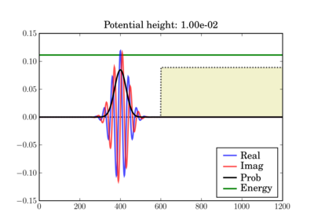
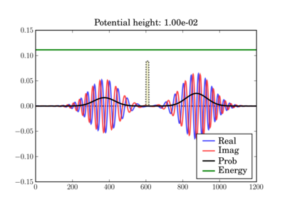
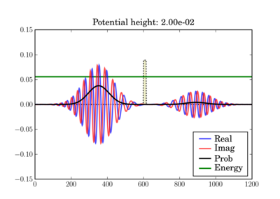

The One-Dimensional Finite-Difference Time-Domain (FDTD) Algorithm Applied to the Schrödinger Equation¶
The code below illustrates the use of the FDTD algorithm to solve the one-dimensional Schrödinger equation for simple potentials. It only requires Numpy and Matplotlib.
All the mathematical details are described in this PDF: Schrodinger_FDTD.pdf
Examples¶
In these figures the potential is shaded in arbitrary units in yellow, while the total energy of the wavepacket is plotted as a green line, in the same units as the potential. So while the energy units are not those on the left axis, both energy plots use the same units and can thus be validly compared relative to one another.
Depending on the particle energy, the yellow region may be classically forbidden (when the green line is inside the yellow region).
The wavepacket starts at t=0 as (step potential shown):
And at the end of the simulation it can look like this, depending on the actual potential height:

This illustrates the tunneling through a thin barrier, depending on the barrier height. In the second case, a classical particle would completely bounce off since its energy is lower than the potential barrier:
 Code¶
#!python numbers=disable
#=============================================================================
#
# Quantum Mechanical Simulation using Finite-Difference
# Time-Domain (FDTD) Method
#
# This script simulates a probability wave in the presence of multiple
# potentials. The simulation is c arried out by using the FDTD algorithm
# applied to the Schrodinger equation. The program is intended to act as
# a demonstration of the FDTD algorithm and can be used as an educational
# aid for quantum mechanics and numerical methods. The simulation
# parameters are defined in the code constants and can be freely
# manipulated to see different behaviors.
#
# NOTES
#
# The probability density plots are amplified by a factor for visual
# purposes. The psi_p quanity contains the actual probability density
# without any rescaling.
#
# BEWARE: The time step, dt, has strict requirements or else the
# simulation becomes unstable.
#
# The code has three built-in potential functions for demonstration.
#
# 1) Constant potential: Demonstrates a free particle with dispersion.
#
# 2) Step potential: Demonstrates transmission and reflection.
#
# 3) Potential barrier: Demonstrates tunneling.
#
# By tweaking the height of the potential (V0 below) as well as the
# barrier thickness (THCK below), you can see different behaviors: full
# reflection with no noticeable transmission, transmission and
# reflection, or mostly transmission with tunneling.
#
# This script requires pylab and numpy to be installed with
# Python or else it will not run.
#
#============================================================================
# Author: James Nagel <nagel@mers.byu.edu>
# 5/25/07
#
# Updates by Fernando Perez <Fernando.Perez@colorado.edu>, 7/28/07
#============================================================================
# Numerical and plotting libraries
import numpy as np
import pylab
# Set pylab to interactive mode so plots update when run outside ipython
pylab.ion()
#=============================================================================
# Utility functions
# Defines a quick Gaussian pulse function to act as an envelope to the wave
# function.
def Gaussian(x,t,sigma):
""" A Gaussian curve.
x = Variable
t = time shift
sigma = standard deviation """
return np.exp(-(x-t)**2/(2*sigma**2))
def free(npts):
"Free particle."
return np.zeros(npts)
def step(npts,v0):
"Potential step"
v = free(npts)
v[npts/2:] = v0
return v
def barrier(npts,v0,thickness):
"Barrier potential"
v = free(npts)
v[npts/2:npts/2+thickness] = v0
return v
def fillax(x,y,*args,**kw):
"""Fill the space between an array of y values and the x axis.
All args/kwargs are passed to the pylab.fill function.
Returns the value of the pylab.fill() call.
"""
xx = np.concatenate((x,np.array([x[-1],x[0]],x.dtype)))
yy = np.concatenate((y,np.zeros(2,y.dtype)))
return pylab.fill(xx, yy, *args,**kw)
#=============================================================================
#
# Simulation Constants. Be sure to include decimal points on appropriate
# variables so they become floats instead of integers.
#
N = 1200 # Number of spatial points.
T = 5*N # Number of time steps. 5*N is a nice value for terminating
# before anything reaches the boundaries.
Tp = 50 # Number of time steps to increment before updating the plot.
dx = 1.0e0 # Spatial resolution
m = 1.0e0 # Particle mass
hbar = 1.0e0 # Plank's constant
X = dx*np.linspace(0,N,N) # Spatial axis.
# Potential parameters. By playing with the type of potential and the height
# and thickness (for barriers), you'll see the various transmission/reflection
# regimes of quantum mechanical tunneling.
V0 = 1.0e-2 # Potential amplitude (used for steps and barriers)
THCK = 15 # "Thickness" of the potential barrier (if appropriate
# V-function is chosen)
# Uncomment the potential type you want to use here:
# Zero potential, packet propagates freely.
#POTENTIAL = 'free'
# Potential step. The height (V0) of the potential chosen above will determine
# the amount of reflection/transmission you'll observe
POTENTIAL = 'step'
# Potential barrier. Note that BOTH the potential height (V0) and thickness
# of the barrier (THCK) affect the amount of tunneling vs reflection you'll
# observe.
#POTENTIAL = 'barrier'
# Initial wave function constants
sigma = 40.0 # Standard deviation on the Gaussian envelope (remember Heisenberg
# uncertainty).
x0 = round(N/2) - 5*sigma # Time shift
k0 = np.pi/20 # Wavenumber (note that energy is a function of k)
# Energy for a localized gaussian wavepacket interacting with a localized
# potential (so the interaction term can be neglected by computing the energy
# integral over a region where V=0)
E = (hbar**2/2.0/m)*(k0**2+0.5/sigma**2)
#=============================================================================
# Code begins
#
# You shouldn't need to change anything below unless you want to actually play
# with the numerical algorithm or modify the plotting.
#
# Fill in the appropriate potential function (is there a Python equivalent to
# the SWITCH statement?).
if POTENTIAL=='free':
V = free(N)
elif POTENTIAL=='step':
V = step(N,V0)
elif POTENTIAL=='barrier':
V = barrier(N,V0,THCK)
else:
raise ValueError("Unrecognized potential type: %s" % POTENTIAL)
# More simulation parameters. The maximum stable time step is a function of
# the potential, V.
Vmax = V.max() # Maximum potential of the domain.
dt = hbar/(2*hbar**2/(m*dx**2)+Vmax) # Critical time step.
c1 = hbar*dt/(m*dx**2) # Constant coefficient 1.
c2 = 2*dt/hbar # Constant coefficient 2.
c2V = c2*V # pre-compute outside of update loop
# Print summary info
print 'One-dimensional Schrodinger equation - time evolution'
print 'Wavepacket energy: ',E
print 'Potential type: ',POTENTIAL
print 'Potential height V0: ',V0
print 'Barrier thickness: ',THCK
# Wave functions. Three states represent past, present, and future.
psi_r = np.zeros((3,N)) # Real
psi_i = np.zeros((3,N)) # Imaginary
psi_p = np.zeros(N,) # Observable probability (magnitude-squared
# of the complex wave function).
# Temporal indexing constants, used for accessing rows of the wavefunctions.
PA = 0 # Past
PR = 1 # Present
FU = 2 # Future
# Initialize wave function. A present-only state will "split" with half the
# wave function propagating to the left and the other half to the right.
# Including a "past" state will cause it to propagate one way.
xn = range(1,N/2)
x = X[xn]/dx # Normalized position coordinate
gg = Gaussian(x,x0,sigma)
cx = np.cos(k0*x)
sx = np.sin(k0*x)
psi_r[PR,xn] = cx*gg
psi_i[PR,xn] = sx*gg
psi_r[PA,xn] = cx*gg
psi_i[PA,xn] = sx*gg
# Initial normalization of wavefunctions
# Compute the observable probability.
psi_p = psi_r[PR]**2 + psi_i[PR]**2
# Normalize the wave functions so that the total probability in the simulation
# is equal to 1.
P = dx * psi_p.sum() # Total probability.
nrm = np.sqrt(P)
psi_r /= nrm
psi_i /= nrm
psi_p /= P
# Initialize the figure and axes.
pylab.figure()
xmin = X.min()
xmax = X.max()
ymax = 1.5*(psi_r[PR]).max()
pylab.axis([xmin,xmax,-ymax,ymax])
# Initialize the plots with their own line objects. The figures plot MUCH
# faster if you simply update the lines as opposed to redrawing the entire
# figure. For reference, include the potential function as well.
lineR, = pylab.plot(X,psi_r[PR],'b',alpha=0.7,label='Real')
lineI, = pylab.plot(X,psi_i[PR],'r',alpha=0.7,label='Imag')
lineP, = pylab.plot(X,6*psi_p,'k',label='Prob')
pylab.title('Potential height: %.2e' % V0)
# For non-zero potentials, plot them and shade the classically forbidden region
# in light red, as well as drawing a green line at the wavepacket's total
# energy, in the same units the potential is being plotted.
if Vmax !=0 :
# Scaling factor for energies, so they fit in the same plot as the
# wavefunctions
Efac = ymax/2.0/Vmax
V_plot = V*Efac
pylab.plot(X,V_plot,':k',zorder=0) # Potential line.
fillax(X,V_plot, facecolor='y', alpha=0.2,zorder=0)
# Plot the wavefunction energy, in the same scale as the potential
pylab.axhline(E*Efac,color='g',label='Energy',zorder=1)
pylab.legend(loc='lower right')
pylab.draw()
# I think there's a problem with pylab, because it resets the xlim after
# plotting the E line. Fix it back manually.
pylab.xlim(xmin,xmax)
# Direct index assignment is MUCH faster than using a spatial FOR loop, so
# these constants are used in the update equations. Remember that Python uses
# zero-based indexing.
IDX1 = range(1,N-1) # psi [ k ]
IDX2 = range(2,N) # psi [ k + 1 ]
IDX3 = range(0,N-2) # psi [ k - 1 ]
for t in range(T+1):
# Precompute a couple of indexing constants, this speeds up the computation
psi_rPR = psi_r[PR]
psi_iPR = psi_i[PR]
# Apply the update equations.
psi_i[FU,IDX1] = psi_i[PA,IDX1] + \
c1*(psi_rPR[IDX2] - 2*psi_rPR[IDX1] +
psi_rPR[IDX3])
psi_i[FU] -= c2V*psi_r[PR]
psi_r[FU,IDX1] = psi_r[PA,IDX1] - \
c1*(psi_iPR[IDX2] - 2*psi_iPR[IDX1] +
psi_iPR[IDX3])
psi_r[FU] += c2V*psi_i[PR]
# Increment the time steps. PR -> PA and FU -> PR
psi_r[PA] = psi_rPR
psi_r[PR] = psi_r[FU]
psi_i[PA] = psi_iPR
psi_i[PR] = psi_i[FU]
# Only plot after a few iterations to make the simulation run faster.
if t % Tp == 0:
# Compute observable probability for the plot.
psi_p = psi_r[PR]**2 + psi_i[PR]**2
# Update the plots.
lineR.set_ydata(psi_r[PR])
lineI.set_ydata(psi_i[PR])
# Note: we plot the probability density amplified by a factor so it's a
# bit easier to see.
lineP.set_ydata(6*psi_p)
pylab.draw()
# So the windows don't auto-close at the end if run outside ipython
pylab.ioff()
pylab.show()
CategoryCookbook